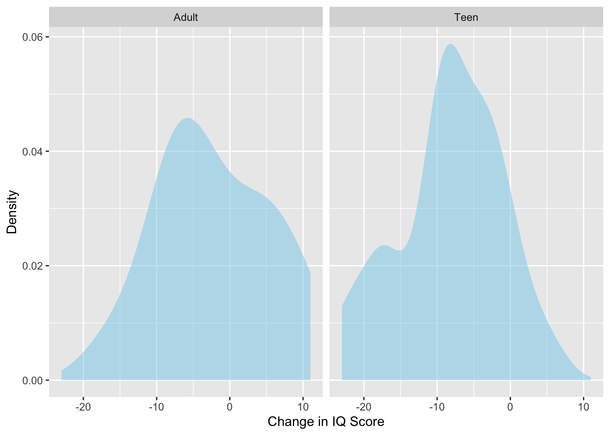
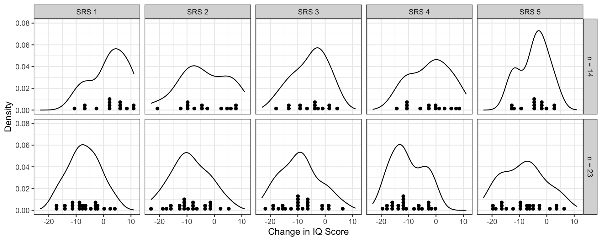
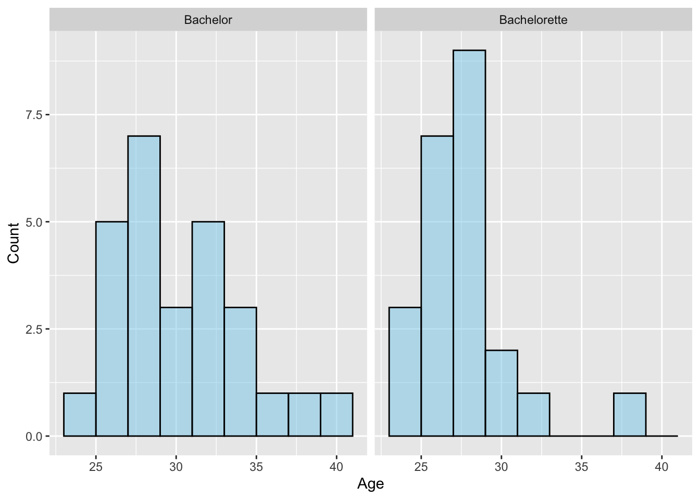

In this chapter you will learn about the assumptions that we need to make in order for the results of a two-sample t-test to be statistically valid.
14.1 Assumptions
For the two-sample t-test there are three statistical assumptions we make about the populations:
The distribution of values in both populations is normally distributed.
The values in both population are independent from each other.
Both populations have the same variance.
For example, in the cannabis case study we need to know that:
If you took the change in IQ score measurements for all people who became dependent on cannabis as a teen and plotted them, the distribution would be normally distributed. Similarly the change in IQ score measurements for all people who became dependent on cannabis as an adult would also be normally distributed.
The change in IQ score measurements for all people who became dependent on cannabis as a teen is independent from those of every other person who became dependent on cannabis as a teen. And, the change in IQ score measurements for all people who became dependent on cannabis as an adult is independent from those of every other person who became dependent on cannabis as an adult.
If you took the change in IQ score measurements for all people who became dependent on cannabis as a teen and computed the variance, that value would be the same as the variance computed from the change in IQ score measurements for all people who became dependent on cannabis as an adult.
Similar to the assumptions from the one-sample t-test, we can never know for sure whether these assumptions are met since we do not have data from the entire population. Instead, we have to decide whether these assumptions seem tenable based on the sample of data we have.
14.1.1 Evaluating the Assumption of Normality
To evaluate the first assumption that the distributions of values in both populations are normally distributed, we plot the sample data for both groups and ask the question: Is this distribution close to normal? The density plot of the sample teen sleep data is shown in Figure 11.1.
# Load librarieslibrary(educate)library(ggformula)library(mosaic)library(tidyverse)# Import datacannabis <-read_csv("https://raw.githubusercontent.com/zief0002/epsy-5261/main/data/cannabis.csv")# Create histogramgf_density(~ iq_change | cannabis_dep, data = cannabis,fill ="skyblue", xlab ="Change in IQ Score",ylab ="Density" )

Figure 14.1: Density plots of IQ score changes for participants who became persistent marijuana users as teens and those who became persistent marijuana users as adults.
The density plots suggests that the SAMPLE distributions of change in IQ scores is not symmetric for either group. The question is whether the POPULATION distributions are normal, not whether the sample distributions are normal. We are only asking whether we believe that the population distributions are normal based on what we see in the sample distributions. To answer this question, we need some idea of what sample distributions of size 14 and 23 look like if they truly do come from a population that is normally distributed. Below are the distributions for five samples of size 14 and 23 that were actually drawn from a normal distribution.
Bin width defaults to 1/30 of the range of the data. Pick better value with
`binwidth`.

Figure 14.2: Five simple random samples of size 14 and 23 drawn from a normal population.
We see that many of these sample distributions have multiple modes or indicate some skew. However, all of these were drawn from a normally distributed population, that is: the assumption of normality would be met. One take away from this is that with small sample sizes it is difficult to tell whether the assumption of normality is met since even sample distributions drawn from a normal population don’t necessarily look normal.
In our example, the sample distributions do not appear normal. Is this because the population they come from is not normal? Or is it that the population is normal, but the small sample size resulted in a non-normal sample? We don’t know!
As in the one-sample situation, even if the samples look non-normal, we can fall back on the Central Limit Theorem (CLT) if our sample size is large enough in both groups (i.e., \(n\geq 30\)). In our example the sample sizes are 14 (adult) and 23 (teen), respectively. These sample sizes are both less than 30. So we cannot rely on the CLT.
Given that the sample distributions deviate from normality and the small sample sizes, it may be that the normality assumption is not tenable or it may be tenable…we just can’t tell. In this situation, it is safest to point out that the normality assumption may not be tenable.
14.1.2 Evaluating the Independence Assumption
To evaluate the independence assumption we need to know whether random chance was used in the study design. With two groups, random chance might be employed in a couple different ways:
Random chance might have been used to select the observations in the sample data (random sampling).
Random chance might have been used to assign the observations to the two different groups (random assignment).
If random chance was used in either of these aspects of the study design, it will guarantee independence of the observations. In our example, the participants were not chosen randomly from the larger populations of adults or teens that became dependent on cannabis. They were all volunteers who agreed to be a part of the study—the study did not employ random sampling. Random chance was also not employed to assign the participants to the two groups being compared. Participants either became dependent on cannabis as teens or adults—they were not randomlly assigned to become dependent at a certain age.
Because we cannot rely on the study design to ensure independence, we need to make a logical argument about whether knowing that one participant’s change in IQ score would convey any information about any other participant’s change in IQ score. It is unlikely that this is the case (at least without more information about the participants). Because of this, we could argue that the independence assumption seems tenable.
14.1.3 Evaluating the Equal Variances Assumption
To evaluate the assumption that the two populations have equal variances1, we will compare the sample variances for both groups.
# Compute numerical summariesdf_stats(~ iq_change | cannabis_dep, data = cannabis)
While the variances aren’t provided directly in the ouptut of the df_stats() function, they can be computed by squaring the standard deviations:
Teen Variance:\(\sigma^2_{\text{Teen}} = 7.14^2 = 50.93\)
Similar to the normality assumption, we don’t expect that both groups will have equal SAMPLE variances, but instead ask the question whether we believe that the POPULATION distributions have equal variances based on what we see in the sample variances. One rule-of-thumb that is often employed is that we find the assumption tenable if the larger variance is no more than four times the smaller variance. In our example, we would ask:
\[
60.38 \overset{?}{>} 50.93 \times 4
\] Because the larger variance (60.38) is not bigger than four times the smaller variance (50.93), we would say the assumption of equal variances is tenable.
14.2 Evaluating Assumptions in the Bachelor and Bachelorette Ages Case Study
Your Turn
In the Bachelor and Bachelorette ages case study from Chapter 13, we evaluated whether, on average, there were age differences between those people selected to be The Bachelor and those selected to be The Bachelorette. The histograms for the sample distributions of ages is shown below. Based on this plot and the sample size, do you believe the normality assumption is tenable?

Figure 14.3: Histograms of ages for the 27 Bachelor and 23 Bachelorette contestants.
The normality assumption may not be tenable. Both sample distributions are skewed to the right. Moreover, the sample sizes for the two groups are both less than 30.
Based on the data collection process described in the data codebook, do you believe the independence assumption is tenable?
There was no random chance used to select the sample data, nor was random chance used to assign the daa into the two groups. Making a logical argument, would knowing one Bachelor’s or Bachelorette’s age give us information about another’s age? Probably not (independence seems tenable), but there might be a case made that it does (independence is not tenable).
Based on the summary statistics provided below, do you believe the equal variances assumption is tenable?
The variance for the Bachelor ages is \(3.80^2=14.45\), and that for the Bachelorette ages is \(3.04^2=9.24\). Since 14.45 is less than four times 9.24, the assumption of equal population variances seems tenable.
This assumption is also referred to as the homogeneity of variance assumption.↩︎